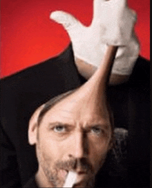

Main Characters
The truth is out there… and so are the people who seek it. Meet the duo that made investigating aliens, conspiracies, and unsolved cases iconic.
Across decades, skies have been pierced by unidentified flying objects — silent, swift, and utterly unexplained. From grainy footage to pilot testimonies, the truth seems just out of reach.

Fox Mulder
The believer. An FBI agent driven by the mysterious disappearance of his sister and a deep conviction that the paranormal is real.
Dana Scully
The skeptic. A medical doctor and scientist assigned to challenge Mulder’s theories — but who ends up believing in more than just facts. Despite her scientific mindset, Scully has had numerous experiences with aliens.
Fun Facts & Unofficial Theories
- Some fans believe Mulder and Scully's connection goes beyond the professional — or even the romantic. Certain episodes *accidentally* look like a slow-burn sci-fi romance.
- One widely loved fan theory says Mulder once wrote poetry about Scully under the alias "Mr. Spooky M," discovered in an unused case file marked “Classified & Personal.”
- In a *very* unofficial fanfic lost to time (but not imagination), Scully and Scully’s clone from an alternate dimension allegedly got into a heated argument about who Mulder really loved.
- A viral headcanon suggests Mulder and Skinner had a secret late-night “stakeout” routine that mysteriously always ended in the same parked car and… long silences.
- LGBTQ+ fans have long speculated that beneath Mulder’s obsession with aliens is an alienation of identity — and that his “true quest” was for acceptance, not just proof.
"Sometimes the only sane answer to an insane world is insanity."— Joe Rogan
"The answers are there. You just have to know where to look."— Gipsy Crusader